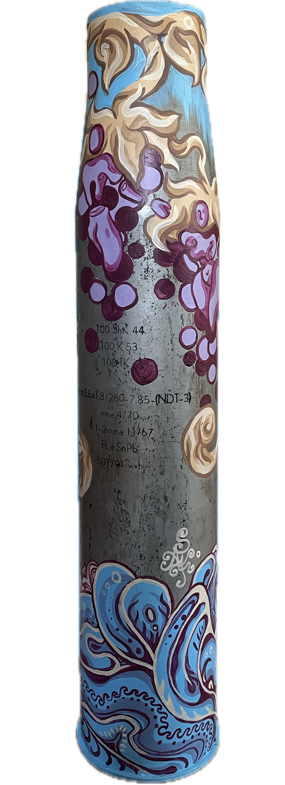

新作作品
プロジェクト
リハチフ学校
-
リハチフ村（ウクライナ）にあるこのリツェウムは、2022年の戦争開始当初、砲撃により被害を受けた。その後、Brave to Rebuild Foundationおよび欧州委員会の決定により、本校の修復が行われることとなった。修復は単なる復元にとどまらず、アート・インスタレーションの制作を目的とするものであった。その一環として、学校のファサードに壁画を制作するアーティストとして、私が招聘された。 本校は1927年に建設され、ウクライナの伝統的な土壁建築技法を用いて建てられた、約100年の歴史を有する建物である。

-

修復は、当初と同一の技法を用いて実施された。「Brave to Rebuild」コミュニティおよび地元住民を含む70名以上のボランティアが協力し、学校が再び開校できるよう支援した。 本壁画では、ウクライナの伝統的な絵画表現と現代的な物語を組み合わせている。葡萄の蔓は、この地域における伝統的な装飾文様の一つである。作品に描かれた女性は待ち続けており、愛する人を見つけることを願って、花冠を水面へと流す。人生の激しい波が彼女の頭上に立ち上がる一方で、彼女にとって最も重要なものは内なる平穏である。
-
修復は、当初と同一の技法を用いて実施された。「Brave to Rebuild」コミュニティおよび地元住民を含む70名以上のボランティアが協力し、学校が再び開校できるよう支援した。 本壁画では、ウクライナの伝統的な絵画表現と現代的な物語を組み合わせている。葡萄の蔓は、この地域における伝統的な装飾文様の一つである。作品に描かれた女性は待ち続けており、愛する人を見つけることを願って、花冠を水面へと流す。人生の激しい波が彼女の頭上に立ち上がる一方で、彼女にとって最も重要なものは内なる平穏である。
-
こだまは陽光を映して輝き、どこかに進むべき道を示す一つの星が燃えている。コウノトリは暖かな土地へと飛び立つが、ある者にとっては、今こそ故郷に留まる時である。彼はアトラスのように、私たちすべてを照らす太陽を確かに支えている。彼は打ち倒そうとする人生の波に屈することはない。彼の内には、救われた魂――すなわち数多の星が輝いている。 やがて、幸福と安らぎをもたらすシダの花が彼のために咲く。愛を求めて水面に流された花冠は、やがてその未来の持ち主へと辿り着くであろう。

武器に描かれた絵画
オークション出品用ジャベリン
本作は、戦場で使用された後、アートオブジェへと変容したジャベリンである。ウクライナ・キーウの映画の家（House of Cinema）において開催されたオークションのために制作された。 作品には豊かな象徴性が込められている。描かれた「眼」は、宇宙、そして正義がすべてを見通しているという思想を象徴する。いかなる出来事も見過ごされることはなく、最終的にはすべての人が相応の結果を受け取ることを示している。 また、ヴィバーナム（カリーナ）は、ウクライナにおける国家的アイデンティティと深く根付いた伝統を象徴する重要なモチーフである。それは、文化的記憶と大地との結びつきを雄弁に物語っている。
バリ（実のとげ）は、人間の欠点や悪徳――より良い世界を築くために私たちが乗り越えるべき内面的な障壁を象徴している。作品を構成するすべての要素は相互に結びついており、私たちの行為とその結果、労働とその成果が不可分であることを示している。 この連関は、オブジェクト全体に描かれた絡み合う蔓によって視覚的に表現されている。それは、原因と結果、個人と社会、破壊と再生を結びつける、目には見えない糸のメタファーである。
使用済み薬莢
本作は、「Weapon Transformation」プロジェクトの一環として制作された、使用済み薬莢である。かつて破壊のための道具であったこれらのオブジェは、新たな役割を与えられ、意味と記憶を宿す存在として再解釈されている。作品は、回復力、内省、そして再生の象徴へと変容した姿を示している。
-

-

- 